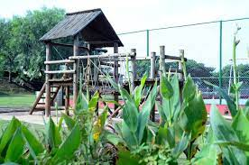

Parque das Orquídeas
O Parque das Orquídeas foi fundado em 2004, como um benefício aos moradores de Várzea Paulista, após o encerramento do aterro sanitário. Destinado a atividades físicas e ao lazer da população, a área possui pista de caminhada, parque infantil e aulas de Ginástica Feminina e Capoeira.